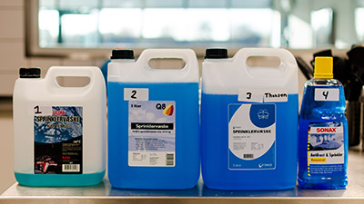
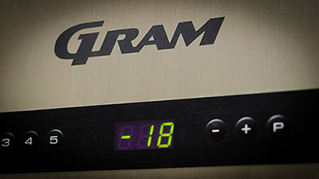
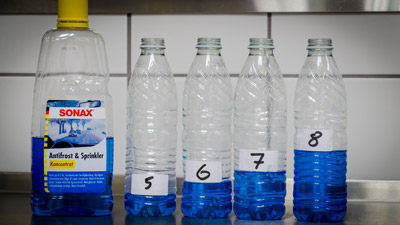

En længere version af videoen kan findes på YouTube og Vimeo
I Danmark er det ikke unormalt at have temperaturer under -21 grader. Så sent som i 2012 blev der målt -23,1 grader i Odense.
Dårlig sprinklervæske kan ødelægge dit sprinkleranlæg, hvis det ikke kan holde det frostfrit.
Hvis bilens sprinklervæske ikke er frostsikker, vil væsken udvide sig og fryse til is, og det kan ødelægge sprinkleranlægget. Jørgen Jørgensen, teknisk rådgiver, FDM
På papiret er de fleste sprinklervæsker dog ens. De kan alle klare -21 grader - eller kan de? Vi testede fire typer sprinklervæsker:

De fleste sprinklervæsker lover at de er frostsikre til -21 grader. De burde derfor sagtens kunne klare 48 timer i en fryser på -18 grader og stadig være flydende. Vi hældte derfor de fire typer på flasker og satte dem i fryseren. Sonax produktet er et koncentrat, så det blev blandet 1:1 med vand, som ifølge flasken skulle gøre væsken frostsikker til -20 grader, som er meget tæt på de -21 grader de andre i testen lover at være frostsikker til.
Kunne de holde sig flydende i fryseren? Se resultatet i videoen.

På nettet kan man nogle steder læse at den "grød" der opstår, når væsken fryser, aldrig bliver ordentligt flydende igen når det varmes op af fx varmen fra motoren, og derved kan ødelægge sprinkleranlægget.
Passer det?
Vi lod flaskerne stå ved stuetemperatur i nogle timer indtil væsken var optøet og hældte dem over i et glas, for at se om de blev 100% flydende eller der stadig ville være klumper i.
Sonax produktet er tydeligvis frostsikkert ved lavere temperaturer end de andre. Men hvad så hvis man har købt en af de produkter som ikke holder hvad de lover og gerne vil være forberedt på en hård vinter? Kan man blot købe en flaske Sonax og hælde lidt i sprinklertanken på sin bil?
For at teste dette blandede vi Sonax med det billigste produkt i testen (Optimize fra T. Hansen). Vi lavede fire blandinger for at se hvor meget Sonax der skulle tilsættes før blandingen kunne klare 48 timer i fryseren uden at fryse til is.
Se resultatet i videoen.

I løbet af testen fandt vi flere forskellige som kunne klare testen i fryseren. Men hvilken løsning er den billigste?
Se det overraskende resultat til sidst i videoen.
{kind=link}
{kind=link}
{kind=link}